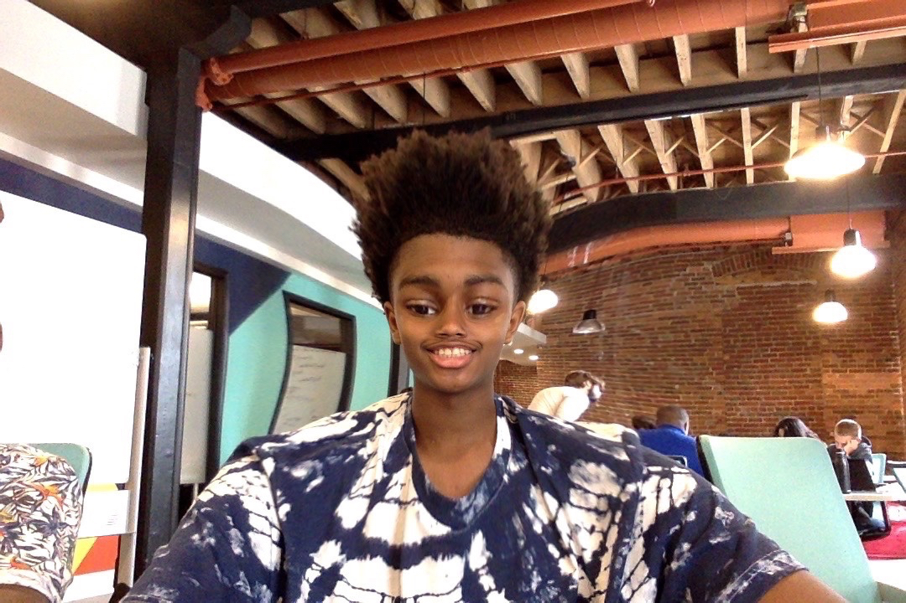

Maurice Hunt
About Me
I am Maurice Hunt Jr. and I am 14 years old. I am responsible and also reliable. I have won many awards both in school and outside of school. I have won honor roll on multiple occasions. I do plan on going to college, if all goes well I’ll be attending Purdue. I’m also going to their high school this fall to hopefully become an engineer; however, I am still unsure of which field.
Perspective
The way I see life is a place for endless opportunities for people to do great things and make changes and that’s what I’d like to do. To me, life means to work hard and be successful in whatever it is I choose to do. I'm a pretty happy person but I can’t always be happy. There are moments in my life where I am sad but for the most part I’m happy. I make my school days go by quickly by doing my work in the most fun way possible. Some of my favorite places to go out to eat at are T.G.I. Friday’s or Red lobster. I also like to go to the gym.
I see most people as friends but some of my close friends sort of as family. I care for people no matter who they are. Yes I have certain special people in my life, like my family and my close friends. My family has helped me become who I am today, especially my uncle and parents. They’ve raised me in a certain way to be different than others around me and to be kind to everyone and care for people. That’s exactly what I do and who I am.
Hobbies
I like to play sports, and play videogames. I play sports mostly for fun

github profile page